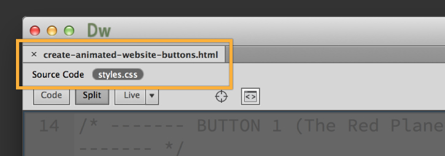

Navigation
Graphical navigation
Making graphical navigation buttons from FW
How to create buttons in FW?
Procedures
- 1. Use rectangular tool to create a box
- 2. Use text tool to name the box
- 3. Filters tool, bevel and emboss tool, inner bevel
- 4.Select the box and text, convert to symbol
- 5. Remember to drag replicated boxes out from the document library
- 6.Edit each state
- 7.Double click on each box and rename them
How to export buttons from FW into DW?
- 1.Choose File>HTML setup
- 2.Choose File>Export
- 3.Export HTML file
- 4."put images in subfolder"
- 5."export slides"

How to make links work in DW?
- 1. Create a new doc. in DW and save it as a new template
- 2. "Insert>Interactive Images>Fireworks HTML"

Text navigation
How to make hover animation work in DW?
- 1. view "style.css" in split view

- 2. button "hover" change color for "background"

- 3. change "border color" and "color"(better in contrast)

Compare and contrast between graphic and text navigations:
TEXT-ONLY NAVIGATION BAR
- stand alone, not interfered with icons or advertisements
- usually have vertical lines/square brackets that separate the links
- usually placed at the bottom of the pages
GRAPHICS NAVIGATION BAR
- user-friendly:used to assist user in browsing the website
- alt tag is used for users that have turned off the graphics option
- maintenance-friendly: cut image into smaller and put them into table cells
ADVANTAGES:
- TONB: easy to create
- TONB: reduce the loading time of a page
- GNB: good choice of icon can increase the usability of the page
DISADVANTAGES
- TONB: boring, lacking interactions or visual appeals
- TONB: hard to distinguish from regular text on a page
- GNB: take longer for a page to load
- GNB: useless if the users use a non-graphic browser
Sample
The buttons work and show hover animation, however, the words shift after I press on it and it look undesirable.